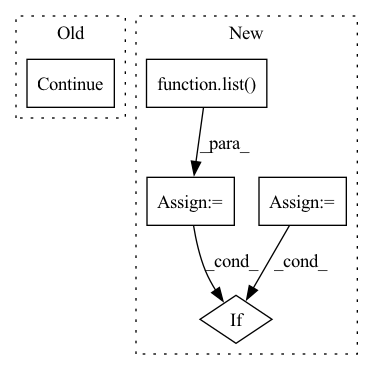

Pattern ID :12623
Before Change
token_start_index = -1
if token_start_index == -1:
continue
// 检查token_span与原span是否对应
token_span = (token_start_index, token_start_index + ent_token_len - 1, ent_span[2])
// XXX:对[UNK]的处理不完善After Change
token_start_indexs = [i for i,v in enumerate(text2tokens) if v==ent2token[0]]
token_end_indexs = [i for i,v in enumerate(text2tokens) if v==ent2token[-1]]
token_start_index = list( filter(lambda x:token2char_span_mapping[x][0] == ent_span[0], token_start_indexs))
token_end_index = list(filter(lambda x:token2char_span_mapping[x][-1]-1 == ent_span[1], token_end_indexs)) // token2char_span_mapping[x][-1]-1 减1是因为原始的char_span是闭区间，而token2char_span是开区间
if len(token_start_index)==0 or len(token_end_index)==0:
print(f"[{ent}] 无法对应到 [{text}] 的token_span，已丢弃")
continue
token_span = (token_start_index[0], token_end_index[0], ent_span[2])In pattern: SUPERPATTERN
Frequency: 3
Non-data size: 5
Instances Fragment ID: 42872335
Project Name: gaohongkui/globalpointer_pytorch
Commit Name: 5146e4d180d865b94c8e0d173320f021df21498d
Time: 2021-07-31
Author: 1427224680@qq.com
File Name: common/utils.py
M Class Name: Preprocessor
N Class Name: Preprocessor
M Method Name: get_ent2token_spans(3)
N Method Name: get_ent2token_spans(3)
M Parent Class: object
N Parent Class: object
M File Name: common/utils.py
N File Name: common/utils.py
M Start Line: 42
M End Line: 68
N Start Line: 42
N End Line: 58
Before Change
// Skip failed calculations
if "formation_energy" not in conf:
continue
assert conf["positions"].attrs["units"] == "Å"
pos = pt.tensor(conf["positions"], dtype=pt.float32)
assert pos.shape == (z.shape[0], 3)After Change
load_confs = None
if version == "1.0":
assert "name" in h5.attrs
mols = h5.items()
load_confs = self._load_confs_1_0
elif version == "2.0":
assert len(h5.keys()) == 1
mols = list( h5.values()) [0].items()
load_confs = self._load_confs_2_0
else:
raise RuntimeError(f"Unsuported layout verions: {version}")
// Iterate over the molecules
for i_mol, (mol_id, mol) in tqdm(
enumerate(mols),
desc="Molecules",
total=len(mols),
leave=False,
):
// Subsample molecules
if i_mol % self.subsample_molecules != 0:
continue
z = pt.tensor(mol["atomic_numbers"], dtype=pt.long) Fragment ID: 42872342
Project Name: torchmd/torchmd-net
Commit Name: d23e6500f2cef1fa56d6c99ce5fdb983f1379bca
Time: 2022-10-28
Author: peastman@stanford.edu
File Name: torchmdnet/datasets/ace.py
M Class Name: Ace
N Class Name: Ace
M Method Name: sample_iter(2)
N Method Name: sample_iter(1)
M Parent Class: Dataset
N Parent Class: Dataset
M File Name: torchmdnet/datasets/ace.py
N File Name: torchmdnet/datasets/ace.py
M Start Line: 72
M End Line: 123
N Start Line: 144
N End Line: 206
Before Change
res_1 = list(precedent_breakup.values())[j][1]
if pet_1 == None or res_1 == None:
exclude.append(j)
continue
dis_pet = nltk.edit_distance(pet, pet_1)
dis_res = nltk.edit_distance(res, res_1)
After Change
continue
pet = precedent_breakup[pre][0]
res = precedent_breakup[pre][1]
cit= precedent_breakup[pre][2]
cluster = []
cluster.append(pre)
if pet != None and res != None:
for j in range(i + 1, len(precedent_breakup)):
pet_1 = list(precedent_breakup.values())[j][0]
res_1 = list(precedent_breakup.values())[j][1]
cit_1 = list( precedent_breakup.values()) [j][2]
if (pet_1 == None or res_1 == None) :
if cit_1==None:
exclude.append(j)
else:
if cit_1==cit:
exclude.append(j)
cluster.append(list(precedent_breakup.keys())[j])
else: Fragment ID: 42872338
Project Name: opennyai/opennyai
Commit Name: 06d85292a0c13264b767d40b01239e9ea98d24ec
Time: 2022-11-02
Author: astha99agarwal@gmail.com
File Name: opennyai/ner/InLegalNER/postprocessing_utils.py
M Class Name: AnonimousClass
N Class Name: AnonimousClass
M Method Name: create_precedent_clusters(2)
N Method Name: create_precedent_clusters(2)
M Parent Class:
N Parent Class:
M File Name: opennyai/ner/InLegalNER/postprocessing_utils.py
N File Name: opennyai/ner/InLegalNER/postprocessing_utils.py
M Start Line: 88
M End Line: 99
N Start Line: 70
N End Line: 116